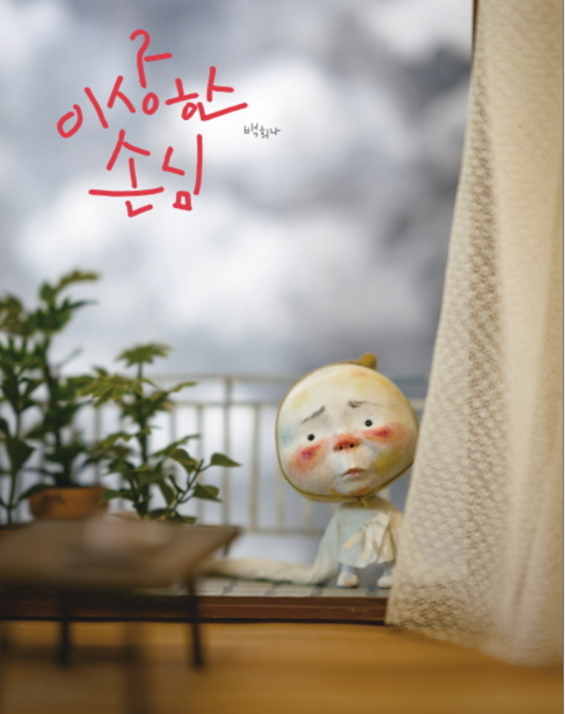
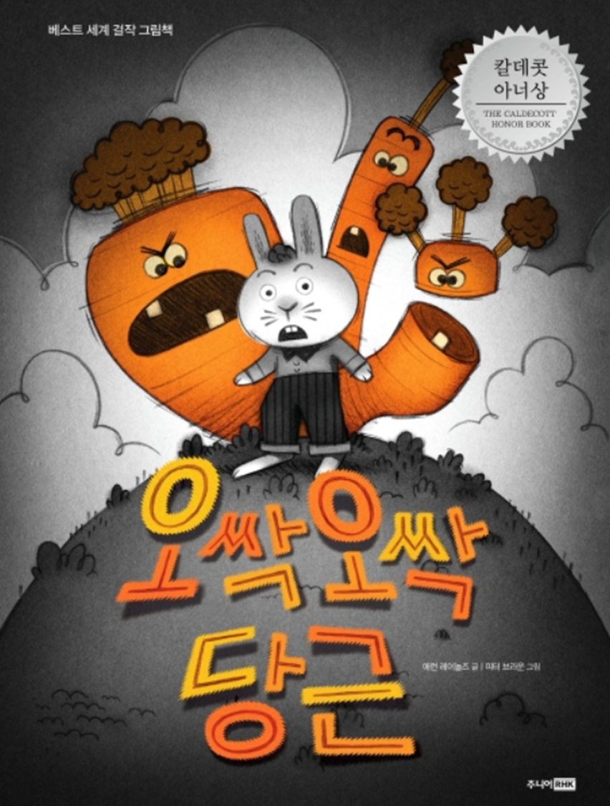

그림책의 가치
그림책이 유아들의 교육적 목적뿐만 아니라 자아에 대한 치료적 목적으로 성인들이 그림책을 선호하는 인식 변화를 보여주는 부분이다. 그림책이 남녀노소 누구나 즐길 수 있는 책으로 인식 변화가 이루어진 데에는 심리적 이유가 가장 크다고 할 수 있다.

그림책에 있는 짧은 문장， 단어와 연결되는 그림의 이미지를 통한 경험은 더 강렬하게 저장되는 효과가 있다. 그림책을 이해하고 감상하는 단순한 수준에 머무는 것이 아니라 그림책 속의 색상, 선, 공간과 같은 요소와 문자 세계로 들어가 마음껏 상상의 나래를 펼 수 있는 특성을 지닌다.
· 그림을 통하여 더 많은 이해를 할 수 있다.
· 글자를 못 읽더라도 그림을 보고 말할 수 있다.
· 주인공과 등장인물에 쉽게 빠져들고 동일시할 수 있다.
· 이야기 스키마, 이야기의 감각을 발달시킬 수 있다.
· 언어 능력이 세련될 수 있도록 한다.
· 미술적, 예술적 요소를 직간접적으로 이해할 수 있다.
· 그림을 통해 구체적으로 관찰할 수 있는 기회가 된다.
· 정서적 경험 및 반응을 유도할 수 있게 된다.

유아문학은 유아를 대상으로 하기 때문에 발달특성에 적절하며 감동을 주는 것이어야 한다. 그림책의 교육적 영향을 살펴보면, 다른 사람의 생각이나 모험을 통해 여러 가지 삶의 모습을 풍부하게 경험을 제공한다. 타인의 문제와 어려움을 이해하는데 문제해결의 통찰력을 길러 정서적인 안정감을 갖게 해준다.
무엇보다도 책에 대한 흥미와 취향을 발달시켜 글씨를 읽을 수 있도록 자연스럽게 돕는다.
그림책에 대한 가치는 다음과 같다.
· 그림책은 유아의 정서를 풍부하게 해준다.
· 그림책은 유아의 상상력과 창의성 발달을 촉진시킨다.
· 그림책은 유아기에 알맞은 전인적 발달에 도움을 준다.
· 그림책을 통한 간접 경험은 정서적 안정감을 얻게 된다.
· 그림책은 자신의 주변세계를 폭넓게 이해할 수 있게 된다.
· 그림책은 바람직한 독서생활 습관을 형성한다.
2022.01.10 - [분류 전체보기] - 그림책의 의의 - 글과 그림으로 표현된 문학 작품
그림책의 의의 - 글과 그림으로 표현된 문학 작품
그림책의 의의 그림책(picture book)이란 글과 그림이 상호 보완적으로 의미를 전달하는 문학의 한 장르를 말한다. 문학적 경험을 통해 인간은 삶의 역사와 미래, 기쁨과 슬픔, 이름다움과 추함을
think-sis.tistory.com